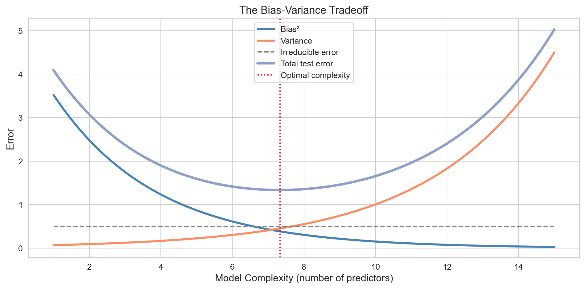
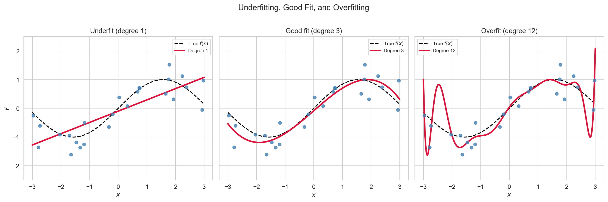
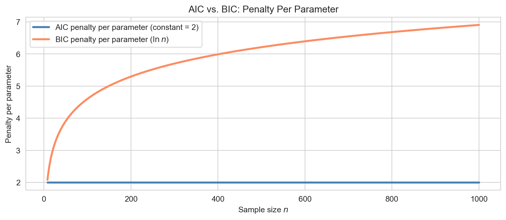

How to choose between competing regression models, including the bias-variance tradeoff, best subset selection, forward and backward stepwise selection, and information criteria (AIC, BIC, adjusted R²).
Author
John Robin Inston
Published
May 22, 2026
Modified
May 22, 2026
ImportantLearning Objectives
Understand the bias-variance tradeoff and why model complexity must be managed.
Describe best subset selection, forward stepwise, backward stepwise, and hybrid stepwise algorithms.
Implement forward and backward stepwise selection in Python.
Use AIC, BIC, and adjusted \(R^2\) to compare models of different sizes.
Libraries and Styling
import numpy as npimport pandas as pdimport matplotlib.pyplot as pltimport seaborn as snsimport statsmodels.formula.api as smfimport statsmodels.api as smfrom sklearn.datasets import fetch_california_housingsns.set_style('whitegrid')sns.set_palette('Set2')
What Does “Optimal” Model Mean?
There is no single definition of an optimal model — the right criterion depends entirely on the goal.
Goal
What matters
Implication
Prediction accuracy
Low out-of-sample error
Can tolerate many predictors if they help
Interpretability
Sparse, readable model
Prefer fewer, meaningful predictors
Inference validity
Correct standard errors
Need well-specified, parsimonious model
Parsimony
Fewest predictors possible
Occam’s razor; generalisability
The criterion used to select a model should match the criterion that matters for the problem at hand.
The Bias-Variance Tradeoff
For any estimator \(\hat{f}\) of \(f\), the expected test error at a point \(x_0\) decomposes as:
Bias is the systematic error from using the wrong model class — underfitting.
Variance is sensitivity to the particular training sample — overfitting.
\(\sigma^2\) is noise inherent in the data; it cannot be reduced by any model.
Adding predictors reduces bias (the model fits more patterns) but inflates variance (the model memorises the training data). The bias-variance tradeoff is managed by choosing model complexity wisely.

The bias-variance tradeoff. As model complexity grows, bias falls but variance rises. The optimal complexity minimises total test error.

Underfitting (degree 1): the model misses real structure. Overfitting (degree 12): the model chases noise. A degree-3 polynomial captures the true pattern well.
The Subset Selection Problem
With \(p\) candidate predictors there are \(2^p\) possible subsets — including the intercept-only model and the full model. Four strategies are used in practice:
Best subset — evaluate all \(2^p\) subsets, pick the one minimising an information criterion.
Forward stepwise — start from the null model, add one predictor at a time.
Backward stepwise — start from the full model, drop one predictor at a time.
Hybrid — allow both additions and removals at each step.
For \(p \leq 20\) or so, best subset selection is feasible. For \(p \gtrsim 30\), stepwise or regularization is preferred.
Best Subset Selection
For each \(k = 0, 1, \ldots, p\), best subset selection fits all \(\binom{p}{k}\) models with exactly \(k\) predictors and saves the best (lowest RSS) as \(\mathcal{M}_k\). It then selects among \(\mathcal{M}_0, \ldots, \mathcal{M}_p\) using a criterion such as AIC, BIC, or adjusted \(R^2\).
The computational cost grows exponentially: \(p = 40\) requires \(2^{40} \approx 10^{12}\) model fits — completely infeasible. Best subset is the gold standard for small \(p\) but stepwise or regularization is needed for moderate to large \(p\).
Forward Stepwise Selection
The forward stepwise algorithm starts with the null model (intercept only) and at each step adds the predictor that most improves a chosen criterion. It stops when no further addition improves the criterion.
def forward_stepwise(y, X_candidates, criterion='aic'):""" Greedy forward stepwise selection. y: pd.Series, X_candidates: pd.DataFrame (predictors only, no intercept). Returns a list of selected predictor names. """ remaining =list(X_candidates.columns) selected = [] best_score = np.infwhile remaining: scores = {}for col in remaining: cols = selected + [col] X_fit = sm.add_constant(X_candidates[cols]) res = sm.OLS(y, X_fit).fit() scores[col] =getattr(res, criterion) best_col =min(scores, key=scores.get) best_new = scores[best_col]if best_new < best_score: best_score = best_new selected.append(best_col) remaining.remove(best_col)else:breakreturn selected
Backward Stepwise Selection
The backward stepwise algorithm starts with the full model (all \(p\) predictors) and at each step drops the predictor whose removal most improves the criterion. It stops when no removal helps.
def backward_stepwise(y, X_candidates, criterion='aic'):""" Greedy backward stepwise selection. """ selected =list(X_candidates.columns) X_fit = sm.add_constant(X_candidates[selected]) best_score =getattr(sm.OLS(y, X_fit).fit(), criterion) improved =Truewhile improved andlen(selected) >1: improved =False scores = {}for col in selected: cols = [c for c in selected if c != col] X_fit = sm.add_constant(X_candidates[cols]) res = sm.OLS(y, X_fit).fit() scores[col] =getattr(res, criterion) drop_col =min(scores, key=scores.get) drop_score = scores[drop_col]if drop_score < best_score: best_score = drop_score selected.remove(drop_col) improved =Truereturn selected
Comparing the Approaches
Property
Forward
Backward
Start
Null model
Full model
Requires \(n > p\)?
No
Yes (full model must be estimable)
Can re-include dropped predictors?
No
No
Can drop previously added predictors?
No
No
Hybrid stepwise alternates between forward and backward passes, allowing both additions and removals at each step. It is more flexible but still greedy — it is not guaranteed to find the globally optimal subset.
ImportantCaution
Stepwise selection inflates Type I error and produces overoptimistic \(p\)-values. It should be used for model building, not for inference. Report final model uncertainty honestly.
Information Criteria
RSS always decreases as predictors are added, so using it alone always selects the full model. Information criteria add a penalty for model complexity to discourage overfitting.
where \(\ell(\hat{\boldsymbol{\beta}})\) is the maximised log-likelihood, \(k\) is the number of free parameters (including \(\sigma^2\)), and \(n\) is the sample size. Lower is better.
AIC (Akaike, 1974) is derived from information-theoretic arguments and estimates out-of-sample prediction error. BIC (Schwarz, 1978) is derived from Bayesian arguments and penalises complexity more heavily for large \(n\) — for \(n \geq 8\), \(\ln n > 2\), so BIC penalises each extra parameter harder than AIC and tends to favour sparser models.
n_vals = np.arange(8, 1001)fig, ax = plt.subplots(figsize=(9, 4))ax.plot(n_vals, 2* np.ones_like(n_vals), lw=2.5, color='steelblue', label='AIC penalty per parameter (constant = 2)')ax.plot(n_vals, np.log(n_vals), lw=2.5, color='#fc8d62', label='BIC penalty per parameter ($\\ln n$)')ax.set_xlabel('Sample size $n$'); ax.set_ylabel('Penalty per parameter')ax.set_title('AIC vs. BIC: Penalty Per Parameter')ax.legend(fontsize=10)plt.tight_layout()plt.show()

AIC vs BIC penalty per parameter as a function of sample size. BIC penalises more heavily and grows without bound as n increases.
Adjusted \(R^2\)
Ordinary \(R^2 = 1 - \text{RSS}/\text{TSS}\) increases whenever a predictor is added, even if irrelevant. Adjusted \(R^2\) corrects for this:
\[\bar{R}^2 = 1 - \frac{\text{RSS}/(n - p - 1)}{\text{TSS}/(n-1)}.\]
Adding a predictor increases \(\bar{R}^2\)only if it reduces the residual variance more than expected by chance. Asymptotically, maximising \(\bar{R}^2\) is equivalent to minimising AIC.
Comparing Models: California Housing
We illustrate how these criteria behave in practice using the California housing dataset — a regression problem with 8 predictors and over 20,000 observations.
The full model achieves the highest \(\bar{R}^2\) and lowest AIC/BIC here because all 8 predictors contribute meaningfully. In noisier datasets with more candidate predictors, the criteria would clearly select a smaller model.